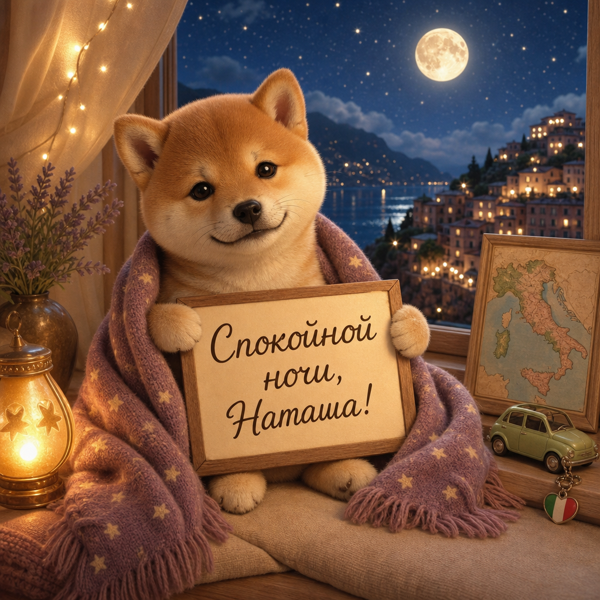

Никаких “ой, нельзя с собакой” в последний момент. Это один из главных фильтров.
Страница по мотивам вашего сегодняшнего планирования: не банальные Рим-Милан-Венеция, а Болонья, Равенна, Урбино, Умбрия, Матера и Апулия — с парковками, апартаментами и нормальным темпом для дороги.
Красивая Италия без толпы, с уютными городами, каменными улочками, морем в конце и ночёвками, где можно спокойно приехать на машине.
Я собрала не просто точки на карте, а настроение поездки: ехать красиво, не мучиться с багажом и собакой, выбирать жильё практично.
Никаких “ой, нельзя с собакой” в последний момент. Это один из главных фильтров.
Маршрут из Праги длинный, поэтому парковка важнее красивого описания отеля.
Апартаменты, домики, кухня, больше свободы — особенно в поездке на две недели.
Полная версия до Апулии получается примерно 3 900 км “чистой” дороги, а реально с заездами — около 4 200–4 500 км.
Старт Италии: портики, паста, тёплый город без лишней суеты.
Мозаики, спокойный ритм и короткий переезд после Болоньи.
Холмы, средневековые виды, Gradara или Pesaro по настроению.
Умбрия: камень, оливки, спокойные прогулки и мягкий свет.
Красивый мостик в сказочный город и хороший переход к югу.
Самая киношная точка маршрута: каменные Sassi, вечерние огни.
Барокко, море, южная Италия и чуть больше отдыха.
Белые города, трулли и открытки в реальной жизни.
Финал у моря перед большой дорогой домой.
По мотивам вашего поиска: собака, парковка, апартаменты/дом, около 100 € за ночь. Перед бронированием лучше финально проверить условия отмены и питомца.
15–17.10 · 2 ночи · примерно 161 €
17–18.10 · 1 ночь · примерно 98 €
18–20.10 · 2 ночи · примерно 177 €
20–22.10 · 2 ночи · примерно 154 €
22–23.10 · 1 ночь · примерно 86 €
23–25.10 · 2 ночи · примерно 134 €
25–27.10 · 2 ночи · примерно 138 €
Финальные ночи у моря · общий черновик около 246 €

Потому что после таких маршрутов надо не только считать километры, но и красиво отдыхать. Шиба-ину уже всё понял: завтра можно снова мечтать про Италию.
Скачать открыткуНаташа, Тимур попросил меня сделать тебе красивую страницу по мотивам вашего сегодняшнего разговора про путешествие — поэтому я собрала маршрут, жильё, собаку, парковки и немного южно-итальянской мечты в одно место.
Пусть поездка получится лёгкой, вкусной и без “где тут припарковаться?” каждые десять минут.
{kind=link}